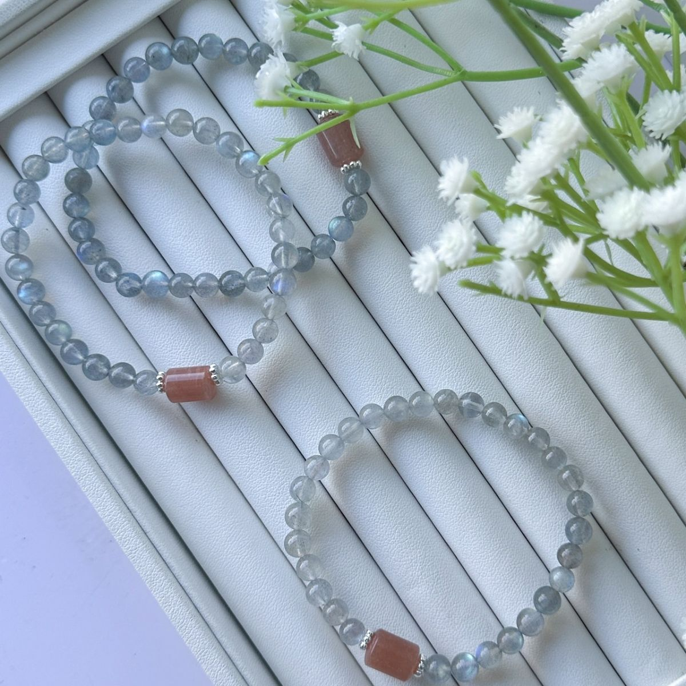
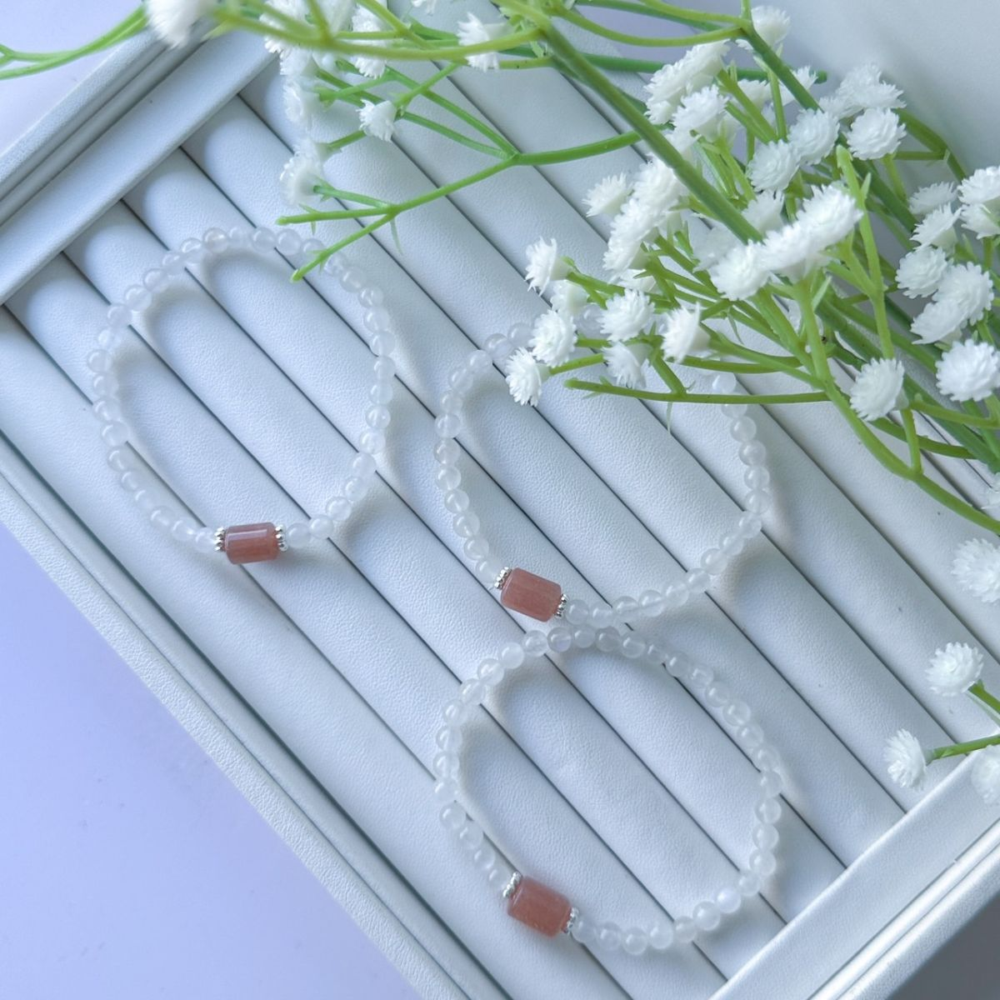
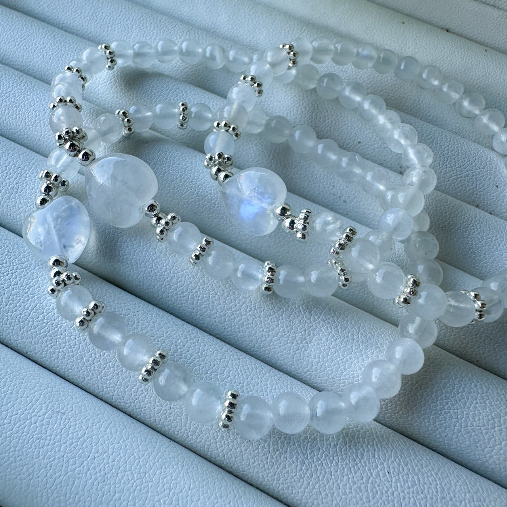

官網上的 月光石 款式
沿用商品原名稱與照片；售價、庫存及服務依賣場最新資訊確認。




想多認識一點？
挑想看的內容展開，慢慢認識這一種礦石。
產地與礦物結構
產地背景
月光類長石的產區依品種不同；包含馬達加斯加等地的拉長石類月光材料。這些紀錄不是各商品的產地證明。
礦物結構與名稱
屬長石類寶石；月光般的光暈與內部微細層狀結構對光的作用有關。「彩月光」在市場上也可能指透明拉長石。
本頁產地是礦種資料中的產出紀錄，不代表照片中商品已完成產地鑑定；原料產地、加工地與販售地是不同資訊。
能量寓意與日常陪伴
美好姻緣 · 溫柔相處
民間常把月光石與美好姻緣、柔和的愛情相連，可作為期待合適緣分、溫柔對待自己與彼此的寄託。
以上為網路資料中的民間能量說法與文化寓意，僅供介紹參考，不代表科學功效或效果保證。
搭配與日常保養
資料來源與閱讀說明
礦石寓意與能量相關內容整理自網路資料，僅供介紹參考，並非科學功效或效果保證。